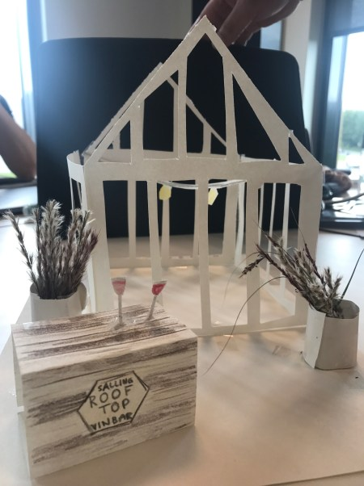

Case 1.1: Århus Kulturhovedstad
Salling Rooftop
Gå til Salling Rooftop
Dette var vores første projekt. Overemnet var ”Kulturby 2017”, og min sammensatte gruppe og jeg skulle derfor finde en kunde med relation hertil. Til det fik vi afsat det der kaldes en feltdag. På denne dag var formålet at indsamle data, samt blive klogere på vores kundes målgruppe. Til feltarbejdet fik vi nogle redskaber i kommunikation, vi kunne bruge til at indsamle værdifulde indsigter. Dels foregik dette ved hjælp af interviews og observationer. Vi endte ud med at vælge Salling Rooftop.
Til denne case skulle vi arbejde med SPRINT, som er en arbejdsmetode, der koger hele processen fra idé til prototype, test og justering ned til fem dage. Denne metode forudsætter dog, at hele gruppen møder op hver eneste dag, er engagerede og kan sætte uoverensstemmelser til side eller arbejde hurtigt igennem dem. Dette gav min gruppe nogle prøvelser, da de fleste af os var enige om det meste, men en enkelt havde nogle helt andre forventninger end resten. Desuden var fremmødet heller ikke at prale af, hvilket gav yderligere udfordringer med at nå alt inden for tidsrammen. Dette medførte, at hvad der skulle have været en genial metode til at fordele arbejdet, blev til at de få personer, der reelt mødte op måtte bære størstedelen af arbejdsbyrden.
Dog vil jeg ikke afskrive SPRINT-metoden fra fremtidige projekter, da jeg tror på, det virkelig er en god metode, så længe det helt rigtige team er sammensat.
Det lærte jeg i denne case
- Nogle gange bliver man sat i en gruppe, som man måske ikke synes er optimal. Dog har de personer, du normalt ikke havde valgt at arbejde sammen med, nogle andre kvaliteter og talenter end du har. I sidste ende bliver produktet af gruppearbejdet dermed bedre, såfremt at forskellighederne bliver omfavnet, frem for set som en forhindring.
- Gruppearbejde fungerer bedst, når forventningerne er afstemt, inden det reelle arbejde begynder. Derfor er team-kontrakt en god idé!
Design
Kreativ proces skal altid dokumenteres. Dette fungerer bedst i en powerpoint, hvor der hurtigt dannes overblik over hvordan designelementer er blevet brugt i den endelige løsning.
Desuden er moodboard, som er en visualisering lavet i evt. Photoshop, altid et godt sted at starte, når et nyt projekt skal opstartes. Ydermere blev jeg bekendt med photoshop, og lærte de mest basale ting, såsom at fjerne en baggrund og redigere billeder flottere med eksempelvis Nik Collection. Jeg lavede desuden et visuelt produkt, med de vigtigste keyitems, vi havde lagt mærke til på Salling Rooftop.
Kommunikation
Her lærte jeg at researche en ny målgruppe og/eller kunde. Jeg lærte at udarbejde et interview, som ville give mig den data, jeg havde brug for.
Virksomhed
I forbindelse med virksomhedsfaget lærte jeg, at lave en BMC på en virksomhed eller kunde. BMC er et beskrivelsesværktøj, som hjælper mig med at få en dybere forståelse af og overblik over virksomhedens/kundens forretningsmæssige grundlag. Det er desuden en virkelig smart måde at få overblik over hvad, hvordan og hvor der skabes værdi for den enkelte virksomhed/kunde, og er et redskab, jeg vil starte med at benytte mig af i fremtiden, når jeg får en ny kunde, da det viser mig, hvor jeg skal lægge mit fokus.
Interaktion
Det første og vigtigste jeg lærte i dette projekt i interaktion var, at jeg altid skal have en boilerplate. En slags skabelon der bruges, hver gang jeg skaber et nyt website. I forbindelse med den hjemmeside, vi udarbejdede for kunden i projektet, lærte jeg det mest basale såsom at lave en menu, undersider samt footer. Jeg lærte desuden at komprimere en hjemmeside til en zip-fil, som samler alt indhold, som ligger bag hjemmesiden.